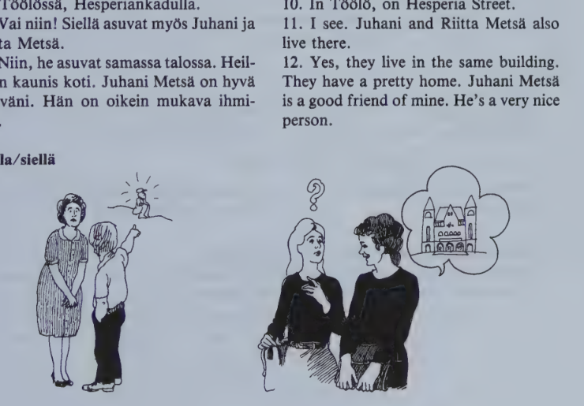
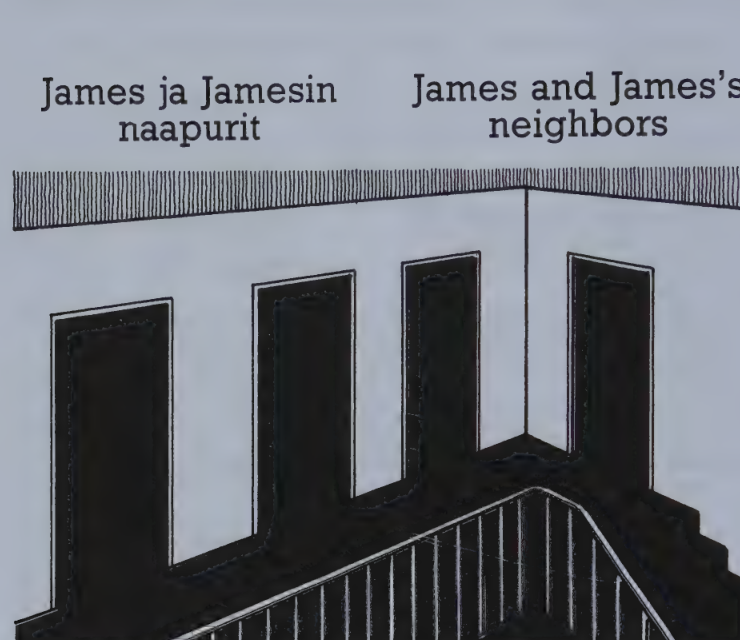

Kappale 10 / Lesson 10#
Missä te asutte? / Where do you live?#
Suomi |
English |
|---|---|
1. Missä te asutte, herra Lake? |
1. Where do you live, Mr. Lake? |
2. Minä asun nyt Helsingissä. Mutta kotini on Skotlannissa (Englannissa, Amerikassa, New Yorkin valtiossa). |
2. I live in Helsinki now. But my home is in Scotland (England, America, New York State). |
3. Missä kaupungissa? |
3. In what city? |
4. Edinburghissa. Se on Skotlannin pääkaupunki. |
4. In Edinburgh. It’s the capital of Scotland. |
5. Skotlanti on kaunis maa. |
5. Scotland is a beautiful country. |
6. Niin on. Siellä on kiva asua. |
6. Yes, it is. It’s nice to live there. |
7. Asuuko teidän perheenne myös Suomessa? |
7. Does your family also live in Finland? |
8. Asuu. Me asumme täällä kaikki. Meillä on oikein mukava asunto. |
8. Yes, they do. We all live here. We have a very nice apartment. |
9. Missä teidän asuntonne on? |
9. Where is your apartment? |
10. Töölössä, Hesperiankadulla. |
10. In Töölö, on Hesperia Street. |
11. Vai niin! Siellä asuvat myös Juhani ja Riitta Metsä. |
11. I see. Juhani and Riitta Metsä also live there. |
12. Niin, he asuvat samassa talossa. Heillä on kaunis koti. Juhani Metsä on hyvä ystäväni. Hän on oikein mukava ihminen. |
12. Yes, they live in the same building. They have a pretty home. Juhani Metsä is a good friend of mine. He’s a very nice person. |

tuolla/siellä
Missä Kalle on?
Tuolla.
Missä Maija on?
Teatterissa. Siellä on Hamlet.
Mitä merkitsee metsä? Se merkitsee ‘forest, woods’.
Kielioppia / Structural notes#
1. The “in” case (inessive)#
Finnish |
English |
Question |
English |
|---|---|---|---|
talo |
house |
missä? talo/ssa |
where? in a house |
metsä |
forest |
metsä/ssä |
in the forest |
Suomi (gen. Suomen) |
Finland |
Suome/ssa |
in Finland |
uusi kauppa (gen. uuden kaupan) |
a new shop |
uude/ssa kaupa/ssa |
in a new shop |
The ending -ssa (-ssä) corresponds roughly to the English preposition “in”.
Whenever the basic form and the gen. stem are different, use the gen. stem before this ending.
Note:
Basic expression |
Case form |
|---|---|
mikä maa? |
mi/ssä maa/ssa? |
tämä maa? |
tä/ssä maa/ssa |
se maa |
siinä maa/ssa |
Note also:
Finnish |
English |
|---|---|
Missä sinä olet? |
Where are you? |
Mi/ssä huonee/ssa sinä olet? |
In which room are you? |
The poss. suffix comes after the case ending:
Finnish |
English |
|---|---|
Oletko sinä huoneessa/si? |
Are you in your room? |
Istun autossa/ni. |
I’m sitting in my car. |
Bad mistake: Kurssi on Helsingissä yliopistossa.
“Helsingin” is a gen. form (“Helsinki’s, of Helsinki”), and is not an adjective or pronoun, which would agree with the following noun.
2. Present tense of verbs (affirmative)#
Verb |
Forms |
|---|---|
asu/a to live |
(minä) asu/n, (sinä) asu/t, hän asu/u, (me) asu/mme, (te) asu/tte, he asu/vat |
tul/la to come |
(minä) tule/n, (sinä) tule/t, hän tule/e, (me) tule/mme, (te) tule/tte, he tule/vat |
The ending of the 3rd pers. sing. is made by prolonging the final vowel of the stem. It may be any of the eight vowels (in these examples u, e). If there is already a long vowel or a diphthong, no ending is added: (voi/n, voi/t) hän voi he/she can, (saa/n, saa/t) hän saa he/she is allowed; he/she receives.
The ending of the 3rd pers. pl. is -vat (-vät).
The pronouns minä, sinä, me, te may be omitted (cp. 3:1).
Some verbs have k p t changes in their conjugation. For some time, therefore, the entire present tense of each new verb will be given in the vocabulary.
In casual everyday speech you may hear forms which differ from the standard conjugation. For instance, the 3rd pers. sing. is often used instead of the 3rd pers. pl.: Kalle ja Ville puhuu (“puhuvat”) englantia.
The negative present tense will be explained in 12:2.
Present tense of the verbs covered in lessons 1-10#
(For inflection types like voida, puhua etc. see 27:1.)
voida verbs#
Verb |
Forms |
|---|---|
saa/da 8 |
saa/n -t saa saa/mme -tte -vat |
voi/da 9 |
voi/n -t voi voi/mme -tte -vat |
puhua verbs#
Verb |
Forms |
|---|---|
asu/a 10 |
asu/n -t -u -mme -tte -vat |
istu/n 5 |
istu/n -t -u -mme -tte -vat |
katso/a 9 |
katso/n -t -o -mme -tte -vat |
+kirjoitta/a 5 |
kirjoita/n -t kirjoittaa kirjoita/mme -tte kirjoittavat |
laula/a 7 |
laula/n -t -a -mme -tte -vat |
maksa/a 7 |
maksa/n -t -a -mme -tte -vat |
osta/a 7 |
osta/n -t -a -mme -tte -vat |
+otta/a 5 |
ota/n -t ottaa ota/mme -tte ottavat |
puhu/a 3 |
puhu/n -t -u -mme -tte -vat |
sano/a 5 |
sano/n -t -o -mme -tte -vat |
+soitta/a 5 |
soita/n -t soittaa soita/mme -tte soittavat |
tanssi/a 5 |
tanssi/n -t -i -mme -tte -vat |
+tietä/ä 6 |
tiedä/n -t tietää tiedä/mme -tte tietävät |
ymmärtä/ä 7 |
ymmärrä/n -t ymmärtää ymmärrä/mme -tte ymmärtävät |
tulla verbs#
Verb |
Forms |
|---|---|
+esitel/lä 8 |
esittele/n -t -e -mme -tte -vät |
luul/la 9 |
luule/n -t -e -mme -tte -vat |
men/nä 7 |
mene/n -t -e -mme -tte -vät |
ol/la 1 |
ole/n -t on ole/mme -tte ovat |
tul/la 5 |
tule/n -t -e -mme -tte -vat |
haluta verbs#
Verb |
Forms |
|---|---|
halu/ta 7 |
halua/n -t -a -mme -tte -vat |
merkitä verbs#
Verb |
Forms |
|---|---|
merki/tä 10 |
merkitse/n -t -e -mme -tte -vät |
Sanasto / Vocabulary#
Finnish |
English |
|---|---|
asu/a (asu/n-t-u-mme-tte-vat) |
to live, reside, dwell; stay |
+asunto asunnon |
place to live, apartment |
ihminen ihmisen |
human being, man, person; pl. people |
kiva-n (= hauska, mukava) |
nice, fun (colloq.) |
metsä-n |
forest, woods |
mukava-n |
nice, pleasant; comfortable |
niin |
so; yes |
nyt |
now |
sama-n |
same |
siellä |
there |
vai niin |
I see, really? is that so? |
valtio-n |
state |
ystävä-n |
friend |
*
Finnish |
English |
|---|---|
baari-n |
bar; cafeteria |
hauska-n |
nice, interesting, fun |
kotona |
at home |
merki/tä (merkitse/n-t-e-mme-tte-vät) |
to mean, signify, denote; to mark |
sauna-n |
sauna |
sohva-n |
sofa, couch |
yksin |
alone, by oneself |
Kappale 11 / Lesson 11#
Mitä te teette? / What do you do?#
Henkilöt: Marja, Kari, James.
Suomi |
English |
|---|---|
1. Kari. Terve, Marja! |
1. Kari. Hello, Marja! |
2. Marja. Hei, Kari! |
2. Marja. Hi, Kari! |
3. K. Marja, tämä on amerikkalainen poika, James Brown. |
3. K. Marja, this is James Brown, he’s American. |
4. M. Hei, James. Mitä sinä teet Suomessa? |
4. M. Hi, James. What do you do in Finland? |
5. James. Minä olen opiskelija. |
5. James. I am a student. |
6. M. Mitä sinä opiskelet? |
6. M. What are you studying? |
7. J. Nyt minä opiskelen suomea. Minä olen suomen kielen kurssilla yliopistossa. |
7. J. I’m studying Finnish now. I’m attending a Finnish course at the University. |
8. M. No, opitko sinä? |
8. M. Well, are you learning it? |
9. J. En tiedä. Minä olen vähän laiska. |
9. J. I don’t know. I am rather lazy. |
10. K. Kyllä hän oppii. Hän puhuu jo aika hyvin. |
10. K. Yes, he is learning it. He already speaks it quite well. |
11. M. Niin puhuu. No, onko suomi helppo vai vaikea kieli? |
11. M. Yes, he does. Well, is Finnish an easy or a difficult language? |
12. J. Minusta aika vaikea. |
12. J. Rather difficult, I think. |
13. K. James on myös työssä. |
13. K. James is also working. |
14. M. Mitä hän tekee? |
14. M. What is he doing? |
15. K. Hän opettaa englantia kielikoulussa. |
15. K. He’s teaching English in a Language School. |
16. M. Vai niin! Oletko sinä hyvä opettaja? |
16. M. Really? Are you a good teacher? |
17. J. En tiedä. Minä toivon niin. |
17. J. I don’t know. I hope so. |
kyllä/niin
(asking with the verb)
Asutteko te Oulussa? Asun (kyllä). Kyllä (asun).
(not asking with the verb)
Oulussako te asutte? Oulussa. Niin (asun).
(agreeing to a statement)
Te asutte Oulussa. - Niin asun.
Milloin teillä on suomen kurssi?
Maanantaina ja keskiviikkona.
“I think that”
Luulen, että tuo kasetti maksaa 55,-. (assumption)
Minusta se on kallis kasetti. (opinion)
nk-ng Helsinki - Helsingissä, kaupunki - kaupungin
y-ä kyllä kyllä, hyvä ystävä
y-ö Töölö, Töölön tyttö, tyttö on työssä
Kielioppia / Structural notes#
1. Present tense of k p t verbs#
a) +otta/a to take#
Form |
Meaning |
|---|---|
(minä) ota/n |
I take |
(sinä) ota/t |
you take |
hän otta/a |
he takes |
(me) ota/mme |
we take |
(te) ota/tte |
you take |
he otta/vat |
they take |
+tied/ä to know#
Form |
Meaning |
|---|---|
(minä) tiedä/n |
I know |
(sinä) tiedä/t |
you know |
hän tietä/ä |
he knows |
(me) tiedä/mme |
we know |
(te) tiedä/tte |
you know |
he tietä/vät |
they know |
The most common type of Finnish verb has a basic form which ends in two vowels: puhu/a, sano/a, maksa/a, +otta/a etc.
When such “puhua” verbs have k p t changes, their present tense always follows the same pattern:
the 3rd pers. has the same consonant(s) as the infinitive;
the 1st and 2nd pers. have a different consonant.
Two verbs with exceptional infinitives, +tehdä (teen) “to do” and +nähdä (näen) “to see” are, in the present, like puhua verbs:
Form |
tehdä |
|---|---|
minä |
tee/n |
sinä |
tee/t |
hän |
teke/e |
me |
tee/mme |
te |
tee/tte |
he |
teke/vät |
b) tulla verbs (and haluta verbs, see 27:1) have a different pattern:#
Form |
+esitel/lä to introduce |
|---|---|
(minä) |
esittele/n |
(sinä) |
esittele/t |
hän |
esittel/e |
(me) |
esittele/mme |
(te) |
esittele/tte |
he |
esittel/vät |
2. No future tense in Finnish#
The Finnish language has no specific tense for the future, which is simply expressed by the present. Thus, minä menen means:
a) I go
b) I am going
c) I shall (will) go
d) I shall (will) be going
Sanasto / Vocabulary#
Finnish |
English |
|---|---|
aika (adv.) (cp. aika time) |
quite, rather, fairly |
+helppo helpon |
easy |
henkilö-n (cp. ihminen) |
person; character (in a play) |
jo |
already |
koulu-n |
school |
laiska-n (!= ahkera) |
lazy |
milloin? |
when? |
minu/sta (kuva on kaunis) (cp. sinusta, hänestä, meistä etc.) |
in my opinion, I think that |
+opetta/a |
to teach, instruct |
opeta/n-t opettaa opeta/mme-tte opettavat |
|
opiskel/la (opiskele/n-t-e-mme-tte-vät) |
to study |
+oppi/a |
to learn |
opi/n-t oppii opi/mme-tte oppivat |
|
+teh/dä |
to do; to make |
tee/n-t tekee tee/mme-tte tekevät |
|
terve terveen (!= sairas) |
healthy, well; hello, cheerio |
toivo/a (toivo/n-t-o-mme-tte-vat) |
to hope |
työ-n |
work, job |
olla työssä |
to be working, be employed |
vaikea-n |
difficult, hard |
*
Finnish |
English |
|---|---|
+kasetti kasetin |
cassette |
kerran |
once; some time (in the future) |
stipendi-n |
scholarship, grant |
tuoli-n |
chair |
Kappale 12 / Lesson 12#
James ja Jamesin naapurit / James and James’s neighbors#

Mattilat asuvat Presidentinkatu 11 B 4:ssä.
Suomi |
English |
|---|---|
1. Kuinka sinä opit niin nopeasti suomea, James? |
1. How do you learn Finnish so fast, James? |
2. Minulla on huone suomalaisessa perheessä. Heidän nimensä on Mattila. Me puhumme vain suomea, me emme puhu yhtään englantia. |
2. I have a room with a Finnish family. Their name is Mattila. We only speak Finnish, we don’t speak any English at all. |
3. Mitä Mattilat tekevät? |
3. What do the Mattilas do? |
4. Matti Mattila on insinööri, joka on työssä isossa firmassa. Hänellä on hyvä palkka. Hänen vaimonsa on lääkäri. Lapset ovat koulussa. He ovat oikein onnellinen perhe. |
4. Matti Mattila is an engineer who works in a big firm. He has a good salary. His wife is a doctor. The children are at school. They are a very happy family. |
5. Tunnetko sinä myös naapurit? |
5. Do you know the neighbors, too? |
6. No, minä tunnen lähimmät naapurit, Niemiset, Uusitalot ja Lindit. Arto Nieminen on liikemies. Vaimo ei ole työssä, hän on kotona. Pojat eivät ole enää koulussa, he opiskelevat yliopistossa. Ville Uusitalo on automekaanikko. Ville ja minä olemme hyvät ystävät. Minä olen usein heillä, koska Ville haluaa oppia englantia. |
6. Well, I know the nearest neighbors, the Nieminens, the Uusitalos, and the Linds. Arto Nieminen is a businessman. His wife does not work, she stays at home. The sons are no longer at school, they study at the university. Ville Uusitalo is a car mechanic. We are great friends, Ville and I. I often visit them because Ville wants to learn English. |
7. Lind ei ole suomalainen nimi. Ovatko he ulkomaalainen perhe? |
7. Lind is not a Finnish name. Are they a foreign family? |
8. Eivät. Lindin perhe on suomenruotsalainen. Mutta he puhuvat myös suomea. Rouva Lind on pianisti ja hänen miehensä oopperalaulaja. Lindit soittavat ja laulavat paljon - liian paljon, sanovat muut. Ja Mattilan lapset kysyvät: “Miksi te ette soita rokkia?” |
8. No, the Lind family are Swedish-speaking Finns. But they speak Finnish, too. Mrs. Lind is a pianist and her husband an opera singer. The Linds play and sing a great deal - too much, the others say. And the Mattila children ask, “Why don’t you play rock?” |
Missä James asuu? Mattilan perheessä = Mattilalla
Ketkä ovat Jamesin naapurit?
Mikä perhe puhuu ruotsia?
Mitkä perheet puhuvat suomea?
Mitkä ovat viikonpäivät?
“who”
Kuka tuo mies on? Hän on Matti Mattila, joka on insinööri.
Possessor |
Suffix |
Meaning |
|---|---|---|
minun ystävä/ni |
ni |
my friend(s) |
sinun |
si |
your |
hänen |
nsä |
his |
teidän |
nne |
your |
heidän |
nsä |
their |
Kielioppia / Structural notes#
1. Basic form (nominative) plural#
Singular |
Meaning |
Plural |
Meaning |
|---|---|---|---|
kirja |
book |
kirja/t |
the books |
Browni (gen. Browni/n) |
Browni/t |
the Browns |
|
pieni maa (gen. pienen maan) |
a small country |
piene/t maa/t |
the small countries |
The ending of the basic form plural is -t.
If the basic form sing. and the gen. stem are different, the gen. stem is used.
Note:
Question |
Meaning |
Plural |
|---|---|---|
mikä kirja? |
which book? |
mi/tkä kirja/t? |
kuka? |
who? |
ke/tkä? |
The plurals of tämä, tuo, se are irregular:
Singular |
Meaning |
Plural |
Meaning |
|---|---|---|---|
tämä kirja |
this book |
nämä kirja/t |
these books |
tuo |
that book |
nuo |
those books |
se |
the, that book |
ne |
the, those books |
Colloquial variants of nämä and nuo are nää and noi.
kaikki is both sing. (“everything”) and pl. (“all, all people, everybody”).
Note also:
Sing. Liisan ystävä on täällä. Liisa’s friend is here.
Hänen ystävänsä on täällä. Her friend is here.
Pl. Liisan ystävät ovat täällä. Liisa’s friends are here.
Hänen ystävänsä ovat täällä. Her friends are here.
When followed by a poss. suffix, the basic form sing. and pl. are identical.
2. Present tense negative#
olla to be - minä ole/n
Negative present |
Meaning |
Negative question |
Meaning |
|---|---|---|---|
(minä) en ole |
I am not |
en/kö (minä) ole? |
am I not? |
(sinä) et |
you are not |
et/kö (sinä) |
are you not? |
hän ei |
he is not |
ei/kö hän |
is he not? |
(me) emme |
we are not |
emme/kö (me) |
are we not? |
(te) ette |
you are not |
ette/kö (te) |
are you not? |
he eivät |
they are not |
eivät/kö he |
are they not? |
Note that
the negation changes like a verb: en, et, ei, emme, ette, eivät;
the verb itself does not change: ole. This stem is derived from the 1st pers. present tense by dropping the ending -n.
Colloquial short forms: mä en oo (= minä en ole), sä et oo (= sinä et ole), et(kö) sä oo (= etkö sinä ole), eik(kö) se oo (= eikö se ole) etc.
Sanasto / Vocabulary#
Finnish |
English |
|---|---|
enää: ei enää |
no longer, no more |
firma-n |
firm, concern, company |
insinööri-n |
engineer, graduate in engineering |
joka jonka (relat. pron.) |
who, which, that |
koska |
because, as, since; when? |
kysy/ä (kysy/n-t-y-mme-tte-vät) |
to ask (questions) |
lapsi lapsen |
child, infant |
laulaja-n |
singer |
liian |
too, excessively |
+liike liikkeen |
shop, store; business; motion, movement |
liike/mies-miehen |
businessman |
lääkäri-n |
physician, doctor |
+mekaanikko mekaanikon |
mechanic |
miksi? |
why? |
muu-n |
other, else |
naapuri-n |
neighbor |
onnellinen onnellisen (!= onneton) |
happy |
+palkka palkan |
salary; wages; pay |
+rokki rokin (= rock) |
rock music |
+tunte/a |
to know, recognize; to feel |
tunne/n-t tuntee tunne/mme-tte tuntevat |
|
usein |
often, frequently |
yhtään: ei y. |
not any, none at all |
*
Finnish |
English |
|---|---|
kissa-n |
cat |
mitään: ei mitään |
nothing |
tänne (cp. täällä) |
here, to this place |
vasta/ta (vastaa/n-t vastaa vastaa/mme-tte-vat) |
to answer, reply; to be responsible |
+viikko viikon |
week |
yhteensä |
altogether, in total |